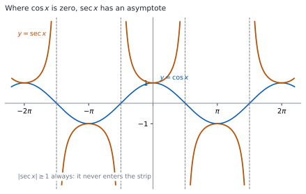
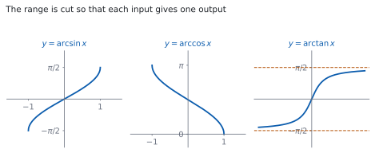

HL 3.9 — Reciprocal and inverse trigonometric functions（相反三角関数と逆三角関数）
- \(\sec\theta\)、\(\operatorname{cosec}\theta\)、\(\cot\theta\) の定義を書ける。
- それぞれが定義されない角を言える。
- \(1+\tan^{2}\theta = \sec^{2}\theta\) と \(1+\cot^{2}\theta = \operatorname{cosec}^{2}\theta\) を使える。
- この \(2\) つを使って、三角方程式を解ける。
- \(\arcsin x\)、\(\arccos x\)、\(\arctan x\) の定義域と値域を書ける。
- \(3\) つのグラフの形を言える。
- \(\arcsin\left(\sin\theta\right)\) が \(\theta\) に戻らない場合を説明できる。
The idea
1. Reciprocal trigonometric ratios（相反三角比）
シラバスは、次のように書いています。
Definition of the reciprocal trigonometric ratios \(\sec\theta\), \(\operatorname{cosec}\theta\) and \(\cot\theta\).
\(3\) つとも、もとの比の逆数です。
\[ \sec\theta = \frac{1}{\cos\theta}, \qquad \operatorname{cosec}\theta = \frac{1}{\sin\theta}, \qquad \cot\theta = \frac{1}{\tan\theta} = \frac{\cos\theta}{\sin\theta} \tag{1}\]
公式集の 3.9 の欄に、次の形で印刷されています。
Reciprocal trigonometric identities
\(\sec\theta = \dfrac{1}{\cos\theta}\)
\(\operatorname{cosec}\theta = \dfrac{1}{\sin\theta}\)
\(\cot\theta\) は書かれていません。 \(\cot\theta = \dfrac{1}{\tan\theta} = \dfrac{\cos\theta}{\sin\theta}\) は、自分で覚えてください。
名前の\(3\) 文字目を見ると分かります。
- \(\mathrm{se}\underline{\mathrm{c}}\) → \(\underline{\mathrm{c}}\mathrm{os}\) の逆数
- \(\mathrm{co}\underline{\mathrm{s}}\mathrm{ec}\) → \(\underline{\mathrm{s}}\mathrm{in}\) の逆数
\(\sec\) が \(\sin\) の逆数ではないところが、取りちがえやすい場所です。
2. Where they are undefined（定義されない角）

分母が \(0\) になる角では、値がありません（HL 2.16）。
| 関数 | 分母 | 定義されない角 |
|---|---|---|
| \(\sec\theta\) | \(\cos\theta\) | \(\theta = \dfrac{\pi}{2} + k\pi\) |
| \(\operatorname{cosec}\theta\) | \(\sin\theta\) | \(\theta = k\pi\) |
| \(\cot\theta\) | \(\sin\theta\) | \(\theta = k\pi\) |
（\(k\) は整数です。）
図 1 のとおり、\(\sec\) のグラフは \(\cos\) の零点で垂直漸近線をもちます。
\(\lvert \sec\theta \rvert \geq 1\) と \(\lvert \operatorname{cosec}\theta \rvert \geq 1\) が、いつも成り立ちます。 \(\lvert\cos\theta\rvert \leq 1\) の逆数だからです。\(-1\) と \(1\) のあいだの値は取りません。
3. The two Pythagorean identities（\(2\) つの Pythagoras の恒等式）
シラバスは、\(2\) つを挙げています。
Pythagorean identities:
\(1 + \tan^{2}\theta = \sec^{2}\theta\)
\(1 + \cot^{2}\theta = \operatorname{cosec}^{2}\theta\)
どちらも公式集の 3.9 の欄にあります。 覚えなくてよい代わりに、どちらを使うかの判断が要ります。
\[ 1 + \tan^{2}\theta = \sec^{2}\theta \tag{2}\]
\[ 1 + \cot^{2}\theta = \operatorname{cosec}^{2}\theta \tag{3}\]
もとは \(\cos^{2}\theta + \sin^{2}\theta = 1\) です（SL 3.6）。両辺を \(\cos^{2}\theta\) で割ると \(1\) つ目、\(\sin^{2}\theta\) で割ると \(2\) つ目が出ます（Why it works）。
4. Using the identities in equations（方程式で使う）
三角方程式に \(\sec^{2}\) や \(\tan\) が混ざっているときは、片方にそろえます。
\[ \sec^{2}\theta = 2\tan\theta \]
を解きます。\(\sec^{2}\theta\) を 式 2 で書きかえると
\[ 1 + \tan^{2}\theta = 2\tan\theta \ \Rightarrow \ \tan^{2}\theta - 2\tan\theta + 1 = 0 \]
\[ (\tan\theta - 1)^{2} = 0 \ \Rightarrow \ \tan\theta = 1 \]
です。\(\tan\) だけの \(2\) 次方程式になりました。\(0 \leq \theta \leq 2\pi\) なら
\[ \theta = \frac{\pi}{4}, \qquad \theta = \frac{5\pi}{4} \]
です（SL 3.7a）。
\[ \text{$2$ 乗のほうを書きかえて、$1$ 種類にそろえる} \tag{4}\]
5. \(\arcsin x\) and \(\arccos x\)（\(\arcsin\) と \(\arccos\)）

シラバスは、次のように書いています。
The inverse functions \(f(x) = \arcsin x\), \(f(x) = \arccos x\), \(f(x) = \arctan x\); their domains and ranges; their graphs.
\(\sin\) は同じ値を何回もとるので、そのままでは逆関数がありません（HL 2.14）。そこで定義域を切ってから、逆関数をつくります。
| 関数 | domain | range |
|---|---|---|
| \(\arcsin x\) | \(-1 \leq x \leq 1\) | \(-\dfrac{\pi}{2} \leq y \leq \dfrac{\pi}{2}\) |
| \(\arccos x\) | \(-1 \leq x \leq 1\) | \(0 \leq y \leq \pi\) |
定義域が \(-1 \leq x \leq 1\) なのは、\(\sin\) と \(\cos\) の値がその範囲しか取らないからです。
値域がちがうところに気をつけてください。図 2 の左と真ん中です。\(\arcsin\) は原点をはさんだ範囲、\(\arccos\) は \(0\) から \(\pi\) までです。
6. \(\arctan x\)（\(\arctan\)）
\(\tan\) はすべての実数を取るので、\(\arctan\) の定義域は実数全体です。
| 関数 | domain | range |
|---|---|---|
| \(\arctan x\) | \(x \in \mathbb{R}\) | \(-\dfrac{\pi}{2} < y < \dfrac{\pi}{2}\) |
端が入りません。 \(\tan\left(\pm\dfrac{\pi}{2}\right)\) に値がないからです。
図 2 の右のとおり、\(y = \pm\dfrac{\pi}{2}\) が水平漸近線です。\(x\) をどれだけ大きくしても、\(\dfrac{\pi}{2}\) には届きません。
7. Reading values of the inverse functions（逆関数の値を読む）
\(\arcsin x\) の値を出すときは、\(2\) つのことを同時に考えます。
- \(\sin(\ \ ) = x\) になる角
- その角が値域に入っていること
\(\arcsin\left(-\dfrac{1}{2}\right)\) なら、\(\sin\theta = -\dfrac{1}{2}\) になる角は無数にありますが、\(-\dfrac{\pi}{2} \leq \theta \leq \dfrac{\pi}{2}\) に入るのは
\[ \theta = -\frac{\pi}{6} \]
だけです。
\(\theta\) が値域の中にあれば戻りますが、外にあると別の角が返ってきます。
\(\sin\dfrac{3\pi}{4} = \dfrac{\sqrt{2}}{2}\) で、\(\arcsin\dfrac{\sqrt{2}}{2} = \dfrac{\pi}{4}\) です。\(\dfrac{3\pi}{4}\) には戻りません。
\(\dfrac{3\pi}{4}\) が \(\arcsin\) の値域 \(\left[-\dfrac{\pi}{2},\ \dfrac{\pi}{2}\right]\) の外にあるからです。
TI-Nspire CX II には \(\sin\)、\(\cos\)、\(\tan\) と、その逆関数のキーはありますが、\(\sec\)・\(\operatorname{cosec}\)・\(\cot\) のキーはありません。
\(\sec 1.2\) を出したいときは 1/cos(1.2) と入力します。\(\cot\) も 1/tan( です。
角の単位に気をつけてください。 ラジアンで答える問題なのに度になっていると、全部ずれます。画面の右上に RAD と出ているかを見てください。
逆関数のキーは ctrl のあとに sin などで出ます。返ってくるのは値域の中の角だけです（第 7 節）。
Paper 1 では使えません。 このページの例題と演習は、すべて手で解けるようにしてあります。
Why it works
\(2\) つの恒等式は、\(1\) つの式から出ます
出発点は \(\cos^{2}\theta + \sin^{2}\theta = 1\) です（SL 3.6）。
両辺を \(\cos^{2}\theta\) で割ります（\(\cos\theta \neq 0\) のとき）。
\[ \frac{\cos^{2}\theta}{\cos^{2}\theta} + \frac{\sin^{2}\theta}{\cos^{2}\theta} = \frac{1}{\cos^{2}\theta} \]
\(\dfrac{\sin\theta}{\cos\theta} = \tan\theta\)、\(\dfrac{1}{\cos\theta} = \sec\theta\) なので
\[ 1 + \tan^{2}\theta = \sec^{2}\theta \]
です。両辺を \(\sin^{2}\theta\) で割ると（\(\sin\theta \neq 0\) のとき）、同じように
\[ \cot^{2}\theta + 1 = \operatorname{cosec}^{2}\theta \]
が出ます。覚える式が増えたのではなく、\(1\) つの式の別の姿です。
なぜ、値域を切らないといけないのか
\(\sin\theta = \dfrac{1}{2}\) になる \(\theta\) は、\(\dfrac{\pi}{6}\)、\(\dfrac{5\pi}{6}\)、\(\dfrac{13\pi}{6}\)、… と無数にあります。
「\(\sin\) の逆」を関数にするには、入力 \(1\) つに出力 \(1\) つでなければなりません（HL 2.14）。そこで、どれを返すかを決めておきます。
\(\arcsin\) では \(\left[-\dfrac{\pi}{2},\ \dfrac{\pi}{2}\right]\) を選びます。この範囲で \(\sin\) はずっと増えつづけるので、同じ値を \(2\) 回とりません。
\(\arccos\) で \(\left[0,\ \pi\right]\) を選ぶのは、\(\cos\) がこの範囲でずっと減りつづけるからです。\(\left[-\dfrac{\pi}{2},\ \dfrac{\pi}{2}\right]\) では \(\cos\) が増えてから減るので、使えません。
\(\arcsin x + \arccos x\) が \(\dfrac{\pi}{2}\) になる理由
\(\alpha = \arcsin x\) と置きます。\(\sin\alpha = x\) で、\(-\dfrac{\pi}{2} \leq \alpha \leq \dfrac{\pi}{2}\) です。
\(\cos\left(\dfrac{\pi}{2} - \alpha\right) = \sin\alpha = x\) です。さらに \(\alpha\) の範囲から
\[ 0 \leq \frac{\pi}{2} - \alpha \leq \pi \]
で、これは \(\arccos\) の値域そのものです。ですから
\[ \arccos x = \frac{\pi}{2} - \alpha = \frac{\pi}{2} - \arcsin x \]
です（演習 7）。値域に入っていることを確かめるところが、この証明の要です。
\(\lvert \sec\theta \rvert \geq 1\) になる理由
\(-1 \leq \cos\theta \leq 1\) で、\(\cos\theta \neq 0\) とします。すると \(0 < \lvert\cos\theta\rvert \leq 1\) です。
\(1\) 以下の正の数で \(1\) を割ると、答えは \(1\) 以上になります。ですから
\[ \lvert \sec\theta \rvert = \frac{1}{\lvert\cos\theta\rvert} \geq 1 \]
です。\(\sec\theta = 0.5\) のような式には、解がありません（演習 10）。図 1 で、\(\sec\) のグラフが \(-1\) と \(1\) のあいだに入っていないことが見えます。
Worked examples
問題文は英語です。意味が理解できなかったら、問題文の下の「日本語訳」を開いてください。解説は日本語です。
例題も演習も、すべて電卓なしで解けます。 Paper 1 のつもりで解いてください。
例題 1 Given that \(\cos\theta = \dfrac{3}{5}\) and \(\theta\) is acute, find the exact values of \(\sec\theta\), \(\operatorname{cosec}\theta\) and \(\cot\theta\).
日本語訳
\(\cos\theta = \dfrac{3}{5}\) で \(\theta\) が鋭角のとき、\(\sec\theta\)、\(\operatorname{cosec}\theta\)、\(\cot\theta\) の正確な値を求めなさい。
\(\sec\theta\) は、逆数を取るだけです。
\[ \sec\theta = \frac{1}{\cos\theta} = \frac{5}{3} \]
\(\operatorname{cosec}\theta\) には \(\sin\theta\) が要ります。\(\cos^{2}\theta + \sin^{2}\theta = 1\) から
\[ \sin^{2}\theta = 1 - \frac{9}{25} = \frac{16}{25} \ \Rightarrow \ \sin\theta = \frac{4}{5} \]
です。\(\theta\) が鋭角なので、正のほうを取ります。
\[ \operatorname{cosec}\theta = \frac{5}{4} \]
\(\cot\theta\) は 式 1 から
\[ \cot\theta = \frac{\cos\theta}{\sin\theta} = \frac{3/5}{4/5} = \frac{3}{4} \]
です。
検算。 式 2 で確かめます。 \(\tan\theta = \dfrac{4}{3}\) なので
\[ 1 + \left(\frac{4}{3}\right)^{2} = 1 + \frac{16}{9} = \frac{25}{9}, \qquad \left(\frac{5}{3}\right)^{2} = \frac{25}{9} \]
合いました ✓
検算（\(3\) 対 \(4\) 対 \(5\) の直角三角形で）。 隣辺 \(3\)、対辺 \(4\)、斜辺 \(5\) です。\(\cot\theta\) は \(\tan\theta\) の逆数なので \(\dfrac{3}{4}\) ✓ 図でも合っています。
\[\sec\theta = \frac{1}{\cos\theta} = \frac{5}{3}\]
\[\sin^{2}\theta = 1-\frac{9}{25} = \frac{16}{25}, \quad \sin\theta = \frac{4}{5} \ (\theta \text{ is acute})\]
\[\operatorname{cosec}\theta = \frac{5}{4}, \qquad \cot\theta = \frac{\cos\theta}{\sin\theta} = \frac{3}{4}\]
例題 2 Show that \(\sec^{2}\theta + \operatorname{cosec}^{2}\theta = \sec^{2}\theta \operatorname{cosec}^{2}\theta\).
日本語訳
\(\sec^{2}\theta + \operatorname{cosec}^{2}\theta = \sec^{2}\theta \operatorname{cosec}^{2}\theta\) を示しなさい。
左辺から始めます（SL 1.6）。定義で書き直します。
\[ \text{LHS} = \frac{1}{\cos^{2}\theta} + \frac{1}{\sin^{2}\theta} \]
通分します。 分母は \(\sin^{2}\theta\cos^{2}\theta\) です。
\[ = \frac{\sin^{2}\theta + \cos^{2}\theta}{\sin^{2}\theta\cos^{2}\theta} = \frac{1}{\sin^{2}\theta\cos^{2}\theta} \]
\(\cos^{2}\theta + \sin^{2}\theta = 1\) を使いました。最後に、\(2\) つの分数に分け直します。
\[ = \frac{1}{\cos^{2}\theta} \times \frac{1}{\sin^{2}\theta} = \sec^{2}\theta \operatorname{cosec}^{2}\theta = \text{RHS} \]
検算。 \(\theta = \dfrac{\pi}{4}\) を入れます。 \(\cos = \sin = \dfrac{\sqrt{2}}{2}\) なので \(\sec^{2} = \operatorname{cosec}^{2} = 2\) です。左辺は \(2+2 = 4\)、右辺は \(2 \times 2 = 4\) ✓
検算（\(\theta = \dfrac{\pi}{6}\) で）。 \(\cos^{2} = \dfrac{3}{4}\)、\(\sin^{2} = \dfrac{1}{4}\) なので、左辺は \(\dfrac{4}{3}+4 = \dfrac{16}{3}\)、右辺は \(\dfrac{4}{3} \times 4 = \dfrac{16}{3}\) ✓
\[\text{LHS} = \frac{1}{\cos^{2}\theta} + \frac{1}{\sin^{2}\theta} = \frac{\sin^{2}\theta+\cos^{2}\theta}{\sin^{2}\theta\cos^{2}\theta}\]
\[= \frac{1}{\sin^{2}\theta\cos^{2}\theta} = \frac{1}{\cos^{2}\theta} \cdot \frac{1}{\sin^{2}\theta} = \sec^{2}\theta\operatorname{cosec}^{2}\theta = \text{RHS}\]
例題 3 Solve \(\sec^{2}\theta = 2\tan\theta\) for \(0 \leq \theta \leq 2\pi\).
日本語訳
\(0 \leq \theta \leq 2\pi\) の範囲で \(\sec^{2}\theta = 2\tan\theta\) を解きなさい。
\(\sec\) と \(\tan\) が混ざっているので、式 2 を使います（第 3 節）。
\[ 1 + \tan^{2}\theta = 2\tan\theta \]
\[ \tan^{2}\theta - 2\tan\theta + 1 = 0 \ \Rightarrow \ (\tan\theta - 1)^{2} = 0 \]
\[ \tan\theta = 1 \]
\(0 \leq \theta \leq 2\pi\) で \(\tan\theta = 1\) になるのは
\[ \theta = \frac{\pi}{4}, \qquad \theta = \frac{5\pi}{4} \]
です。\(\tan\) の周期は \(\pi\) なので、\(2\pi\) までに \(2\) つあります。
検算。 \(\theta = \dfrac{\pi}{4}\) を入れます。 \(\cos\dfrac{\pi}{4} = \dfrac{\sqrt{2}}{2}\) なので \(\sec^{2}\dfrac{\pi}{4} = \dfrac{1}{1/2} = 2\) です。右辺は \(2\tan\dfrac{\pi}{4} = 2\) ✓
検算（\(\theta = \dfrac{5\pi}{4}\) で）。 \(\cos\dfrac{5\pi}{4} = -\dfrac{\sqrt{2}}{2}\) なので \(\sec^{2} = 2\)、\(\tan\dfrac{5\pi}{4} = 1\) で右辺も \(2\) ✓ \(\cos\) が負でも、\(2\) 乗で消えます。
\[\sec^{2}\theta = 1+\tan^{2}\theta, \quad \text{so} \quad 1+\tan^{2}\theta = 2\tan\theta\]
\[\tan^{2}\theta-2\tan\theta+1 = 0, \quad (\tan\theta-1)^{2} = 0, \quad \tan\theta = 1\]
\[\theta = \frac{\pi}{4}, \qquad \theta = \frac{5\pi}{4}\]
例題 4 (a) Write down the domain and the range of \(\arccos\).
(b) Find the exact value of \(\arcsin\left(-\dfrac{1}{2}\right) + \arccos\left(-\dfrac{1}{2}\right)\).
(c) Explain why \(\arcsin\left(\sin\dfrac{3\pi}{4}\right)\) is not equal to \(\dfrac{3\pi}{4}\).
日本語訳
(a) \(\arccos\) の定義域と値域を書きなさい。
(b) \(\arcsin\left(-\dfrac{1}{2}\right) + \arccos\left(-\dfrac{1}{2}\right)\) の正確な値を求めなさい。
(c) \(\arcsin\left(\sin\dfrac{3\pi}{4}\right)\) が \(\dfrac{3\pi}{4}\) に等しくない理由を説明しなさい。
(a) 第 5 節 の表のとおりです。
\[ \text{domain: } -1 \leq x \leq 1, \qquad \text{range: } 0 \leq y \leq \pi \]
(b) \(\sin\theta = -\dfrac{1}{2}\) で \(-\dfrac{\pi}{2} \leq \theta \leq \dfrac{\pi}{2}\) に入るのは \(-\dfrac{\pi}{6}\) です。
\(\cos\theta = -\dfrac{1}{2}\) で \(0 \leq \theta \leq \pi\) に入るのは \(\dfrac{2\pi}{3}\) です。
\[ -\frac{\pi}{6} + \frac{2\pi}{3} = \frac{-\pi + 4\pi}{6} = \frac{\pi}{2} \]
(c) \(\sin\dfrac{3\pi}{4} = \dfrac{\sqrt{2}}{2}\) です。\(\arcsin\dfrac{\sqrt{2}}{2} = \dfrac{\pi}{4}\) なので、\(\dfrac{3\pi}{4}\) には戻りません。
試験ではこう書く
The function \(\arcsin\) returns the angle in its range \(\left[-\dfrac{\pi}{2},\ \dfrac{\pi}{2}\right]\) whose sine is the given number, and it can return no other angle. Here \(\sin\dfrac{3\pi}{4} = \dfrac{\sqrt{2}}{2}\), so \(\arcsin\left(\sin\dfrac{3\pi}{4}\right) = \arcsin\dfrac{\sqrt{2}}{2}\). The angle in \(\left[-\dfrac{\pi}{2},\ \dfrac{\pi}{2}\right]\) whose sine is \(\dfrac{\sqrt{2}}{2}\) is \(\dfrac{\pi}{4}\), so the value is \(\dfrac{\pi}{4}\). The angle \(\dfrac{3\pi}{4}\) has the same sine, but it lies outside the range of \(\arcsin\), so it cannot be returned. In general \(\arcsin(\sin\theta) = \theta\) only when \(\theta\) itself lies in \(\left[-\dfrac{\pi}{2},\ \dfrac{\pi}{2}\right]\).
（\(\arcsin\) は値域の中の角しか返さない。\(\dfrac{3\pi}{4}\) は値域の外なので、同じ \(\sin\) の値をもつ \(\dfrac{\pi}{4}\) が返る、という意味です。）
検算。 (b) を 式 1 ではなく、Why it works の式で確かめます。 \(\arcsin x + \arccos x = \dfrac{\pi}{2}\) なので、\(x = -\dfrac{1}{2}\) でも \(\dfrac{\pi}{2}\) ✓
検算（(c) を数で）。 \(\sin\dfrac{\pi}{4} = \dfrac{\sqrt{2}}{2}\) と \(\sin\dfrac{3\pi}{4} = \dfrac{\sqrt{2}}{2}\) で、確かに同じ値です ✓ 戻り先は \(1\) つしか選べません。
(a) Domain: \(-1 \leq x \leq 1\). Range: \(0 \leq y \leq \pi\).
(b) \(\arcsin\left(-\dfrac{1}{2}\right) = -\dfrac{\pi}{6}\), \(\ \arccos\left(-\dfrac{1}{2}\right) = \dfrac{2\pi}{3}\)
\[-\frac{\pi}{6}+\frac{2\pi}{3} = \frac{\pi}{2}\]
(c) \(\sin\dfrac{3\pi}{4} = \dfrac{\sqrt{2}}{2}\) and \(\arcsin\dfrac{\sqrt{2}}{2} = \dfrac{\pi}{4}\), since \(\dfrac{\pi}{4}\) is in the range of \(\arcsin\) while \(\dfrac{3\pi}{4}\) is not.
Common errors
\(\sec\theta = \dfrac{1}{\cos\theta}\) です（第 1 節）。名前の \(3\) 文字目で見分けてください。
\(\operatorname{cosec}\theta\) のほうが \(\sin\) の逆数です。最初の \(2\) 文字 co にひっぱられないことです。
公式集の 3.9 には \(\sec\) と \(\operatorname{cosec}\) しかありません（第 1 節）。
\(\cot\theta = \dfrac{1}{\tan\theta} = \dfrac{\cos\theta}{\sin\theta}\) は、自分で覚えておく必要があります。
\(\tan\) が出てくる式に \(1+\cot^{2}\theta = \operatorname{cosec}^{2}\theta\) を使っても、進みません。
\(\tan\) と \(\sec\)、\(\cot\) と \(\operatorname{cosec}\) が組です（第 3 節）。式に何が混ざっているかを先に見てください。
\(\arcsin\) は \(\left[-\dfrac{\pi}{2},\ \dfrac{\pi}{2}\right]\)、\(\arccos\) は \(\left[0,\ \pi\right]\) です（第 5 節）。
\(\arccos\) には負の値がありません。 \(\arccos\left(-\dfrac{1}{2}\right)\) は \(-\dfrac{2\pi}{3}\) ではなく \(\dfrac{2\pi}{3}\) です。
\(\theta\) が値域の外にあると、戻りません（第 7 節）。
\(\theta\) が \(\left[-\dfrac{\pi}{2},\ \dfrac{\pi}{2}\right]\) に入っているかを確かめてから使ってください。
\(\sec\theta = 0.5\) や \(\operatorname{cosec}\theta = -\dfrac{1}{2}\) には、解がありません（第 2 節）。
\(\lvert\cos\theta\rvert \leq 1\) の逆数なので、\(\lvert\sec\theta\rvert\) は必ず \(1\) 以上です。まず大きさを見てください。
Exercises
各問題に、折りたたみが \(3\) つ付いています。日本語訳、解答例（答案用紙に書くべきこと。英語です）、解説（なぜそうなるか。日本語です）。
まず自分で解いて、次に解答例と見くらべてください。解説は、合わなかったときだけ開けば十分です。
1 Given that \(\sin\theta = \dfrac{5}{13}\) and \(\theta\) is acute, find the exact values of \(\operatorname{cosec}\theta\), \(\sec\theta\) and \(\cot\theta\).
日本語訳
\(\sin\theta = \dfrac{5}{13}\) で \(\theta\) が鋭角のとき、\(\operatorname{cosec}\theta\)、\(\sec\theta\)、\(\cot\theta\) の正確な値を求めなさい。
\[\operatorname{cosec}\theta = \frac{13}{5}\]
\[\cos^{2}\theta = 1-\frac{25}{169} = \frac{144}{169}, \quad \cos\theta = \frac{12}{13} \ (\theta \text{ is acute})\]
\[\sec\theta = \frac{13}{12}, \qquad \cot\theta = \frac{\cos\theta}{\sin\theta} = \frac{12}{5}\]
2 Show that \(\cot^{2}\theta - \cos^{2}\theta = \cot^{2}\theta\cos^{2}\theta\).
日本語訳
\(\cot^{2}\theta - \cos^{2}\theta = \cot^{2}\theta\cos^{2}\theta\) を示しなさい。
\[\text{LHS} = \frac{\cos^{2}\theta}{\sin^{2}\theta} - \cos^{2}\theta = \cos^{2}\theta\left(\frac{1}{\sin^{2}\theta}-1\right)\]
\[= \cos^{2}\theta \cdot \frac{1-\sin^{2}\theta}{\sin^{2}\theta} = \cos^{2}\theta \cdot \frac{\cos^{2}\theta}{\sin^{2}\theta} = \cot^{2}\theta\cos^{2}\theta = \text{RHS}\]
\(\cos^{2}\theta\) でくくるのが、いちばん短い道です。かっこの中は \(\dfrac{1}{\sin^{2}\theta}-1\) で、通分すると \(1-\sin^{2}\theta = \cos^{2}\theta\) が出ます。
検算。 \(\theta = \dfrac{\pi}{4}\) で確かめます。\(\cot^{2} = 1\)、\(\cos^{2} = \dfrac{1}{2}\) なので、左辺は \(1-\dfrac{1}{2} = \dfrac{1}{2}\)、右辺は \(1 \times \dfrac{1}{2} = \dfrac{1}{2}\) ✓
検算（\(\theta = \dfrac{\pi}{3}\) で）。 \(\cot^{2} = \dfrac{1}{3}\)、\(\cos^{2} = \dfrac{1}{4}\) です。左辺は \(\dfrac{1}{3}-\dfrac{1}{4} = \dfrac{1}{12}\)、右辺は \(\dfrac{1}{3} \times \dfrac{1}{4} = \dfrac{1}{12}\) ✓
3 Solve \(\tan^{2}\theta = \sec\theta + 1\) for \(0 \leq \theta \leq 2\pi\).
日本語訳
\(0 \leq \theta \leq 2\pi\) の範囲で \(\tan^{2}\theta = \sec\theta + 1\) を解きなさい。
\[\tan^{2}\theta = \sec^{2}\theta - 1, \quad \text{so} \quad \sec^{2}\theta - 1 = \sec\theta + 1\]
\[\sec^{2}\theta - \sec\theta - 2 = 0, \quad (\sec\theta-2)(\sec\theta+1) = 0\]
\(\sec\theta = 2\) gives \(\cos\theta = \dfrac{1}{2}\), so \(\theta = \dfrac{\pi}{3}\) or \(\theta = \dfrac{5\pi}{3}\).
\(\sec\theta = -1\) gives \(\cos\theta = -1\), so \(\theta = \pi\).
\[\theta = \frac{\pi}{3}, \quad \pi, \quad \frac{5\pi}{3}\]
\(\tan^{2}\theta\) のほうを書きかえて、\(\sec\) だけにそろえます（式 4）。\(\sec\) の \(2\) 次方程式になります。
\(\sec\theta = k\) は \(\cos\theta = \dfrac{1}{k}\) と同じです。逆数を取ってから、ふつうの三角方程式として解きます。
検算。 \(\theta = \dfrac{\pi}{3}\) では \(\tan^{2} = 3\)、\(\sec+1 = 2+1 = 3\) ✓
検算（\(\theta = \pi\) で）。 \(\tan\pi = 0\) なので左辺は \(0\)、\(\sec\pi = -1\) なので右辺は \(-1+1 = 0\) ✓
4 Solve \(\sec^{2}\theta = 4\) for \(0 \leq \theta \leq 2\pi\).
日本語訳
\(0 \leq \theta \leq 2\pi\) の範囲で \(\sec^{2}\theta = 4\) を解きなさい。
\[\sec^{2}\theta = 4 \ \Rightarrow \ \cos^{2}\theta = \frac{1}{4} \ \Rightarrow \ \cos\theta = \pm\frac{1}{2}\]
\[\theta = \frac{\pi}{3}, \quad \frac{2\pi}{3}, \quad \frac{4\pi}{3}, \quad \frac{5\pi}{3}\]
\(\cos^{2}\theta\) に直してから、\(\pm\) の両方を取ります。\(4\) つ出ます。
\(\pm\) の片方だけを取ると、答えが半分になります（HL 2.15 の \(2\) 乗の話と同じです）。
検算。 \(\theta = \dfrac{2\pi}{3}\) では \(\cos = -\dfrac{1}{2}\)、\(\sec = -2\)、\(\sec^{2} = 4\) ✓
検算（個数で）。 \(\cos\theta = \dfrac{1}{2}\) で \(2\) つ、\(\cos\theta = -\dfrac{1}{2}\) で \(2\) つ、合わせて \(4\) つ ✓
5 Write down the domain and the range of \(\arcsin\), of \(\arccos\) and of \(\arctan\).
日本語訳
\(\arcsin\)、\(\arccos\)、\(\arctan\) の定義域と値域を書きなさい。
\(\arcsin\): domain \(-1 \leq x \leq 1\), range \(-\dfrac{\pi}{2} \leq y \leq \dfrac{\pi}{2}\).
\(\arccos\): domain \(-1 \leq x \leq 1\), range \(0 \leq y \leq \pi\).
\(\arctan\): domain \(x \in \mathbb{R}\), range \(-\dfrac{\pi}{2} < y < \dfrac{\pi}{2}\).
6 Find the exact value of each of the following: (a) \(\arctan\sqrt{3}\), (b) \(\arccos\left(-\dfrac{\sqrt{2}}{2}\right)\), (c) \(\arcsin\left(\sin\dfrac{5\pi}{6}\right)\).
日本語訳
次のそれぞれの正確な値を求めなさい。(a) \(\arctan\sqrt{3}\)、(b) \(\arccos\left(-\dfrac{\sqrt{2}}{2}\right)\)、(c) \(\arcsin\left(\sin\dfrac{5\pi}{6}\right)\)。
(a) \(\tan\dfrac{\pi}{3} = \sqrt{3}\) and \(\dfrac{\pi}{3}\) is in the range, so \(\arctan\sqrt{3} = \dfrac{\pi}{3}\).
(b) \(\cos\dfrac{3\pi}{4} = -\dfrac{\sqrt{2}}{2}\) and \(\dfrac{3\pi}{4}\) is in the range, so the value is \(\dfrac{3\pi}{4}\).
(c) \(\sin\dfrac{5\pi}{6} = \dfrac{1}{2}\), and \(\arcsin\dfrac{1}{2} = \dfrac{\pi}{6}\).
どれも「値域に入る角を選ぶ」ところが要です（第 7 節）。
- では \(\dfrac{5\pi}{6}\) が \(\arcsin\) の値域の外なので、\(\dfrac{\pi}{6}\) が返ります（例題 4）。
検算。 (b) を逆にたどります。\(\cos\dfrac{3\pi}{4} = -\dfrac{\sqrt{2}}{2}\) ✓ \(\dfrac{3\pi}{4}\) は \(\left[0,\ \pi\right]\) に入っています ✓
検算（(c) を数で）。 \(\sin\dfrac{5\pi}{6}\) と \(\sin\dfrac{\pi}{6}\) はどちらも \(\dfrac{1}{2}\) ✓ 返るのは値域の中の \(\dfrac{\pi}{6}\) です。
7 Show that \(\arcsin x + \arccos x = \dfrac{\pi}{2}\) for every \(x\) with \(-1 \leq x \leq 1\).
日本語訳
\(-1 \leq x \leq 1\) を満たすすべての \(x\) について \(\arcsin x + \arccos x = \dfrac{\pi}{2}\) であることを示しなさい。
Let \(\alpha = \arcsin x\), so \(\sin\alpha = x\) and \(-\dfrac{\pi}{2} \leq \alpha \leq \dfrac{\pi}{2}\).
\[\cos\left(\frac{\pi}{2}-\alpha\right) = \sin\alpha = x\]
From \(-\dfrac{\pi}{2} \leq \alpha \leq \dfrac{\pi}{2}\) we get \(0 \leq \dfrac{\pi}{2}-\alpha \leq \pi\), which is the range of \(\arccos\).
\[\arccos x = \frac{\pi}{2}-\alpha, \quad \text{so} \quad \arcsin x + \arccos x = \alpha + \frac{\pi}{2} - \alpha = \frac{\pi}{2}\]
\(\dfrac{\pi}{2}-\alpha\) が \(\arccos\) の値域に入っていることを書くところが、この証明の要です（Why it works）。これがないと、「\(\cos\) の値が同じ角」の \(1\) つでしかありません。
検算。 \(x = 0\) では \(\arcsin 0 = 0\)、\(\arccos 0 = \dfrac{\pi}{2}\) で、和は \(\dfrac{\pi}{2}\) ✓
検算（\(x = 1\) で）。 \(\arcsin 1 = \dfrac{\pi}{2}\)、\(\arccos 1 = 0\) で、和は \(\dfrac{\pi}{2}\) ✓ 端でも成り立ちます。
試験ではこう書く
Let \(\alpha = \arcsin x\). By the definition of \(\arcsin\) this means \(\sin\alpha = x\) and \(-\dfrac{\pi}{2} \leq \alpha \leq \dfrac{\pi}{2}\). Using \(\cos\left(\dfrac{\pi}{2}-\alpha\right) = \sin\alpha\), we get \(\cos\left(\dfrac{\pi}{2}-\alpha\right) = x\). Multiplying the inequality \(-\dfrac{\pi}{2} \leq \alpha \leq \dfrac{\pi}{2}\) by \(-1\) and adding \(\dfrac{\pi}{2}\) gives \(0 \leq \dfrac{\pi}{2}-\alpha \leq \pi\), and this is exactly the range of \(\arccos\). So \(\dfrac{\pi}{2}-\alpha\) is the angle that \(\arccos\) returns for the input \(x\), that is \(\arccos x = \dfrac{\pi}{2}-\alpha\). Adding, \(\arcsin x + \arccos x = \alpha + \left(\dfrac{\pi}{2}-\alpha\right) = \dfrac{\pi}{2}\) for every \(x\) in \([-1,\ 1]\).
8 Explain why the domain of \(\arcsin\) must be \(-1 \leq x \leq 1\).
日本語訳
\(\arcsin\) の定義域が \(-1 \leq x \leq 1\) でなければならない理由を説明しなさい。
The domain of an inverse function is the range of the original function.
For every real \(\theta\), \(-1 \leq \sin\theta \leq 1\), so the range of \(\sin\) is \([-1,\ 1]\).
Hence \(\arcsin x\) is defined only for \(-1 \leq x \leq 1\): for any other \(x\) there is no angle whose sine is \(x\).
逆関数の定義域は、もとの関数の値域です（HL 2.14）。
\(\sin\) の値が \(-1\) から \(1\) までしかないことが、そのまま理由になります。
検算。 \(\arcsin 2\) を考えます。\(\sin\theta = 2\) になる実数 \(\theta\) はありません ✓
検算（端で）。 \(\arcsin 1 = \dfrac{\pi}{2}\) で、\(\sin\dfrac{\pi}{2} = 1\) ✓ 端は定義されています。
試験ではこう書く
By definition, \(\arcsin x\) is the angle whose sine is \(x\), so a value of \(\arcsin x\) exists only when some angle actually has sine equal to \(x\). For every real number \(\theta\) the point \((\cos\theta,\ \sin\theta)\) lies on the unit circle, so \(\sin^{2}\theta \leq 1\) and hence \(-1 \leq \sin\theta \leq 1\). The range of the sine function is therefore \([-1,\ 1]\), and there is no angle whose sine is, say, \(2\). Since the domain of an inverse function is the range of the original function, the domain of \(\arcsin\) is \(-1 \leq x \leq 1\). Every value in that interval is attained by \(\sin\) on \(\left[-\dfrac{\pi}{2},\ \dfrac{\pi}{2}\right]\), so no value of the interval has to be left out either.
9 Solve \(3\cot^{2}\theta = 1\) for \(0 < \theta < \pi\).
日本語訳
\(0 < \theta < \pi\) の範囲で \(3\cot^{2}\theta = 1\) を解きなさい。
\[\cot^{2}\theta = \frac{1}{3} \ \Rightarrow \ \cot\theta = \pm\frac{1}{\sqrt{3}} \ \Rightarrow \ \tan\theta = \pm\sqrt{3}\]
\[\theta = \frac{\pi}{3}, \qquad \theta = \frac{2\pi}{3}\]
\(\cot\) の逆数を取って \(\tan\) に直すと、知っている形になります（第 1 節）。
\(0 < \theta < \pi\) では、\(\tan\theta = \sqrt{3}\) から \(\dfrac{\pi}{3}\)、\(\tan\theta = -\sqrt{3}\) から \(\dfrac{2\pi}{3}\) が出ます。
検算。 \(\theta = \dfrac{2\pi}{3}\) では \(\tan = -\sqrt{3}\)、\(\cot = -\dfrac{1}{\sqrt{3}}\)、\(3\cot^{2} = 3 \times \dfrac{1}{3} = 1\) ✓
検算（\(\pm\) の両方）。 \(\theta = \dfrac{\pi}{3}\) でも \(3 \times \dfrac{1}{3} = 1\) ✓ \(2\) 乗なので、符号は消えます。
10 A student solves \(\sec\theta = \dfrac{1}{2}\) and gives the answer \(\theta = \dfrac{\pi}{3}\). Explain the error.
日本語訳
ある生徒が \(\sec\theta = \dfrac{1}{2}\) を解いて、\(\theta = \dfrac{\pi}{3}\) と答えました。まちがいを説明しなさい。
\(\sec\theta = \dfrac{1}{2}\) means \(\dfrac{1}{\cos\theta} = \dfrac{1}{2}\), that is \(\cos\theta = 2\).
But \(-1 \leq \cos\theta \leq 1\) for every real \(\theta\), so no angle satisfies the equation: it has no solutions.
The student has solved \(\cos\theta = \dfrac{1}{2}\) instead, which is a different equation.
\(\sec\theta\) と \(\cos\theta\) を取りちがえたのが、まちがいのもとです。\(\sec\theta = \dfrac{1}{2}\) なら \(\cos\theta = 2\) です。
\(\lvert\sec\theta\rvert \geq 1\) なので、\(\dfrac{1}{2}\) という値はそもそも出ません（Why it works）。
検算。 \(\theta = \dfrac{\pi}{3}\) を入れると \(\cos\dfrac{\pi}{3} = \dfrac{1}{2}\) なので \(\sec\dfrac{\pi}{3} = 2\) です ✓ \(\dfrac{1}{2}\) ではありません。
検算（グラフで）。 図 1 で、\(\sec\) のグラフは \(-1\) と \(1\) のあいだに入っていません ✓
試験ではこう書く
By definition \(\sec\theta = \dfrac{1}{\cos\theta}\), so the equation \(\sec\theta = \dfrac{1}{2}\) is equivalent to \(\dfrac{1}{\cos\theta} = \dfrac{1}{2}\), that is \(\cos\theta = 2\). For every real \(\theta\) the cosine satisfies \(-1 \leq \cos\theta \leq 1\), so \(\cos\theta = 2\) is impossible and the equation has no solutions at all. The student appears to have replaced \(\sec\theta\) by \(\cos\theta\) and solved \(\cos\theta = \dfrac{1}{2}\), which does have the solution \(\theta = \dfrac{\pi}{3}\) but is a different equation. Checking the proposed answer confirms the error: \(\cos\dfrac{\pi}{3} = \dfrac{1}{2}\), so \(\sec\dfrac{\pi}{3} = 2\), not \(\dfrac{1}{2}\). In general \(\lvert\sec\theta\rvert \geq 1\), so any equation of the form \(\sec\theta = k\) with \(\lvert k \rvert < 1\) has no solutions.